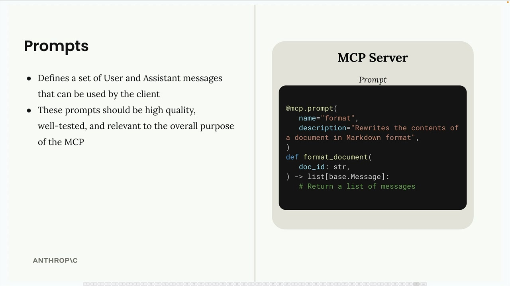
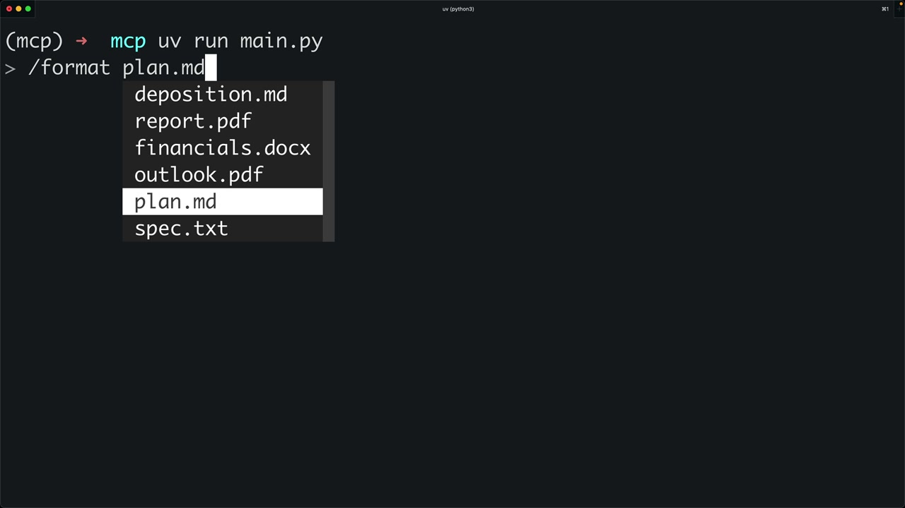
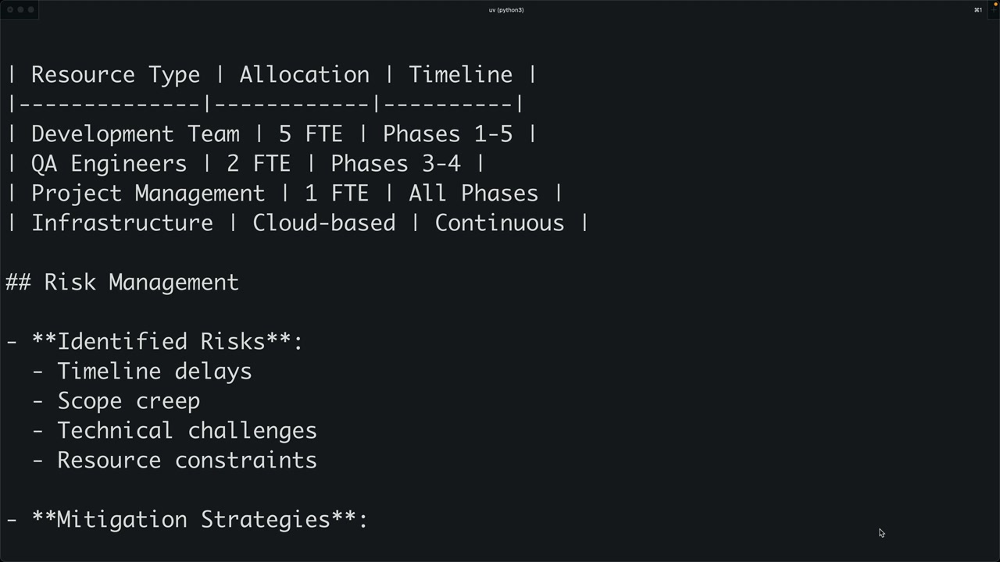

클라이언트의 프롬프트
MCP의 프롬프트는 클라이언트가 사용할 수 있는 사용자 및 어시스턴트 메시지 집합을 정의합니다. 이 프롬프트들은 품질이 높고, 충분히 테스트되었으며, MCP 서버의 전반적인 목적과 관련이 있어야 합니다.

목록 프롬프트 구현
첫 번째 단계는 MCP 클라이언트에서 list_prompts 메서드를 구현하는 것입니다. 이 메서드는 서버에서 사용 가능한 모든 프롬프트를 가져옵니다:
async def list_prompts(self) -> list[types.Prompt]:
result = await self.session().list_prompts()
return result.prompts
이 간단한 구현은 세션의 list_prompts 메서드를 호출하고 결과에서 프롬프트 배열을 반환합니다.
개별 프롬프트 가져오기
get_prompt 메서드는 인수가 삽입된 특정 프롬프트를 가져옵니다. 프롬프트를 요청할 때 키워드 인수로 프롬프트 함수에 전달되는 인수를 제공합니다:
async def get_prompt(self, prompt_name, args: dict[str, str]):
result = await self.session().get_prompt(prompt_name, args)
return result.messages이 메서드는 결과에서 메시지를 반환하며, 이 메시지들은 Claude에 직접 입력할 수 있는 대화를 형성합니다.
프롬프트 인수의 작동 방식
서버 측에서 프롬프트 함수를 정의할 때 매개변수를 받을 수 있습니다. 예를 들어, 문서 서식 지정 프롬프트는 doc_id 매개변수를 기대할 수 있습니다:
def format_document(doc_id: str):
# The doc_id gets interpolated into the prompt
클라이언트가 get_prompt를 호출할 때, 인수 딕셔너리에는 예상되는 키가 포함되어야 합니다. MCP 서버는 이를 키워드 인수로 프롬프트 함수에 전달하여 프롬프트 템플릿에 동적 콘텐츠를 삽입할 수 있게 합니다.
CLI에서 프롬프트 테스트
구현이 완료되면 명령줄 인터페이스를 통해 프롬프트를 테스트할 수 있습니다. 슬래시(/)를 입력하면 사용 가능한 프롬프트가 명령으로 나타납니다. 프롬프트를 선택하면 사용 가능한 옵션(예: 문서 ID) 중에서 선택하라는 메시지가 표시될 수 있으며, 그런 다음 완성된 프롬프트가 Claude에 전송됩니다.

워크플로는 다음과 같습니다:
- 사용자가 프롬프트를 선택합니다 (예: "format")
- 시스템이 필요한 인수를 요청합니다 (예: 서식을 지정할 문서)
- 보간된 값과 함께 프롬프트가 Claude에 전송됩니다
- Claude는 도구를 사용하여 추가 데이터를 가져오고 작업을 완료할 수 있습니다

프롬프트 모범 사례
MCP 서버용 프롬프트를 만들 때:
- 서버의 목적과 관련성 있게 만드세요
- 배포 전에 철저히 테스트하세요
- 명확하고 구체적인 지시를 사용하세요
- 사용 가능한 도구와 잘 연동되도록 설계하세요
- 사용자가 제공해야 할 인수를 고려하세요
프롬프트는 미리 정의된 기능과 동적 사용자 요구 사이의 간극을 메워주며, 매개변수화를 통해 유연성을 유지하면서 Claude에게 복잡한 작업을 위한 구조화된 출발점을 제공합니다.